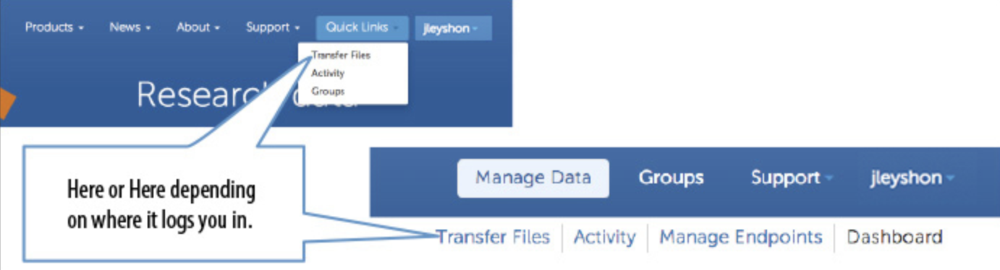
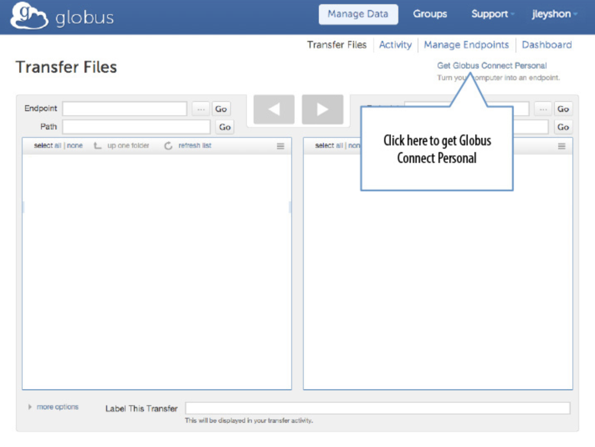
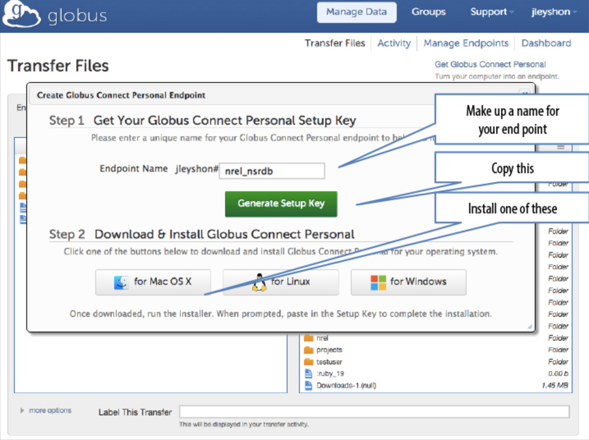
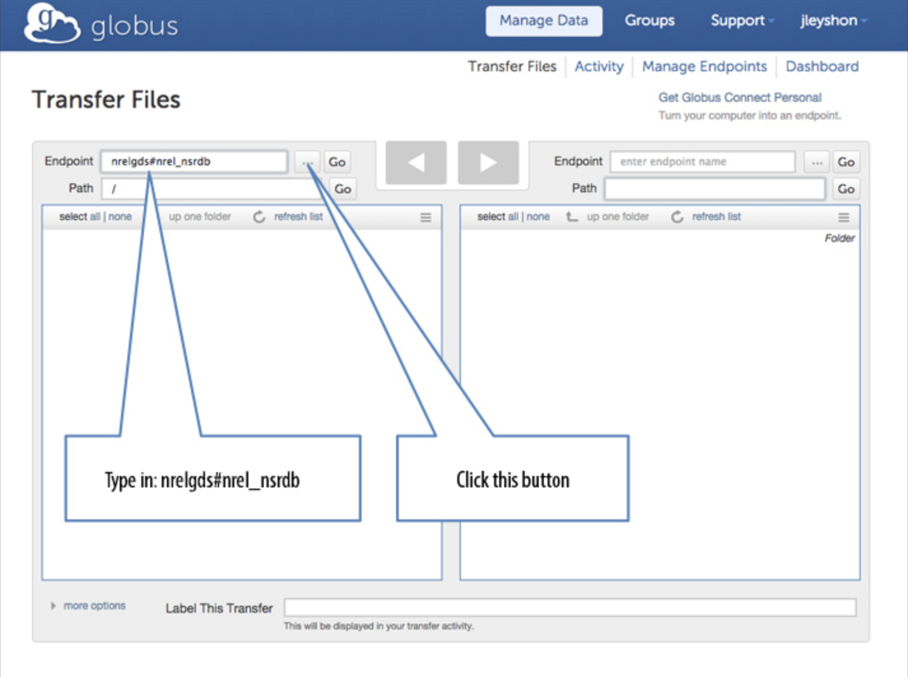
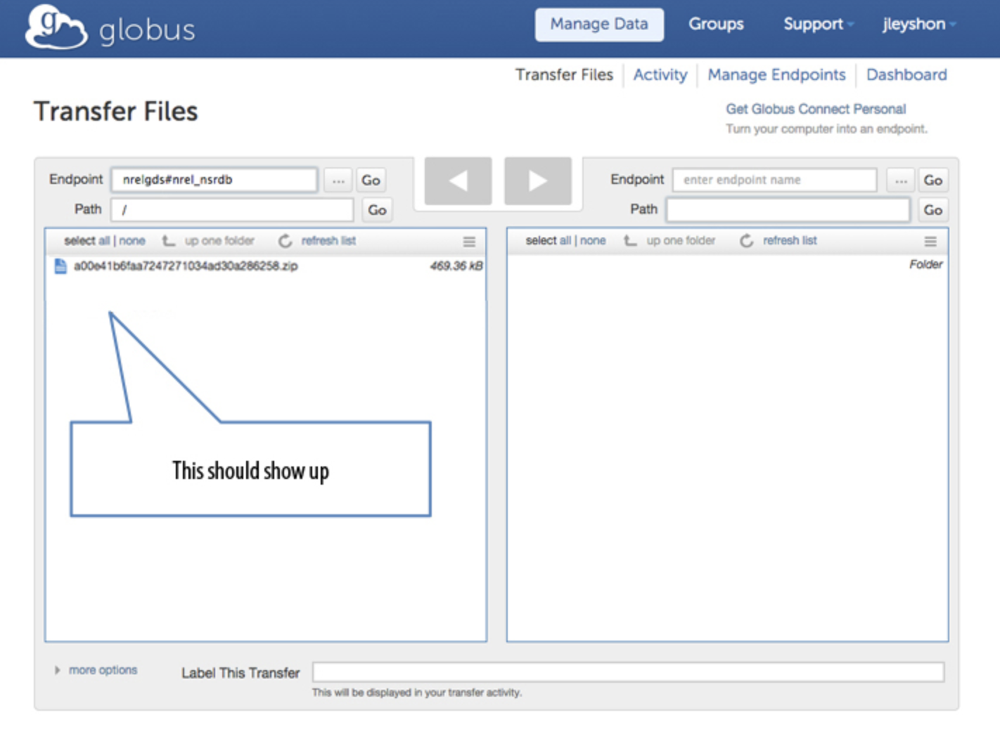
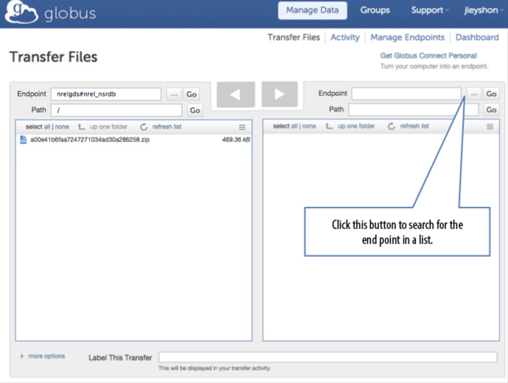
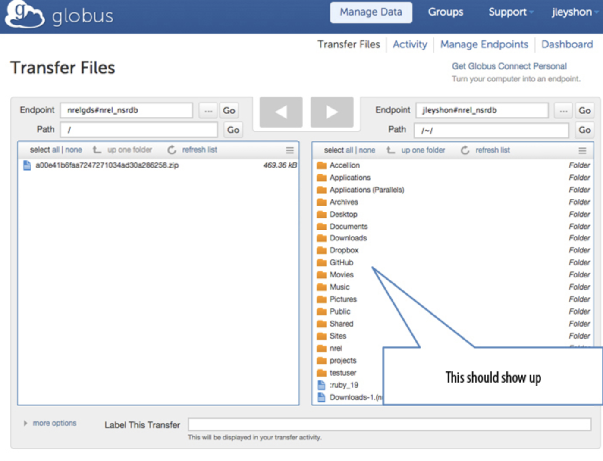
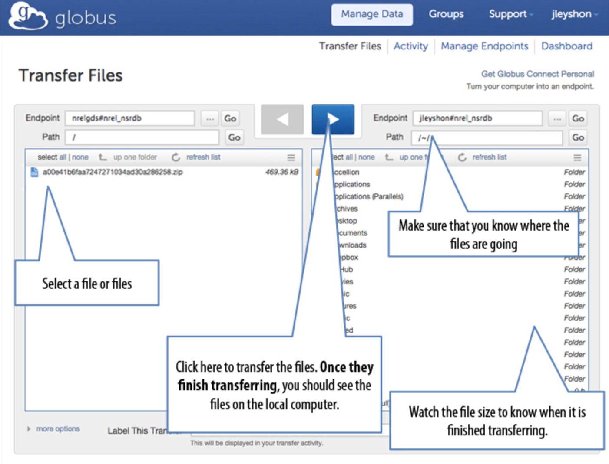

STEP 1
Sign up for a Globus account at https://www.globus.org/SignUp. The email verification link will likely open a new browser window from your inbox and log you into Globus.
For larger data sets, it is necessary to use Globus to manage the data downloads. Below are detailed instructions on how to use the Globus system in conjunction with the NSRDB Viewer.
Sign up for a Globus account at https://www.globus.org/SignUp. The email verification link will likely open a new browser window from your inbox and log you into Globus.
If the verification does not log you in, sign in at https://www.globus.org/.
Go to "Transfer Files."
Set up a Globus Connect Personal Endpoint.
NOTE: You will need to download and install software to proceed.
Create the end point.
Copy the setup key.
Select your operating system type.
Go to your "Applications/Programs" folder, and open "Globus Connect" to get thsetup prompt.
Paste the setup key when prompted
NOTE: If you experience a server error when connecting to the "Generate Setup Key" and completing installation, it is likely due to a local firewall restriction. Please contact your IT support, and ask to use an open line.
Once Globus Connect Personal is running on your computer, return to the Globus website "Transfer Files" screen.
On the left, enter "nrelgds#nrel_nsrdb" for the endpoint and click "Go."
 On the right, use the drop-down menu to search for the personal endpoint that you set up in Step 4 and click "Go."
 Select the files you want on the left. You can test your connection by downloading a small file called "test.txt." The unique file name of your download that was provided to you by the NSRDB Viewer download dialog will be listed on the left for 24 hours.
Select a directory on your local computer on the right.
Click the large blue button at the top of the screen to transfer files to your personal end point.
